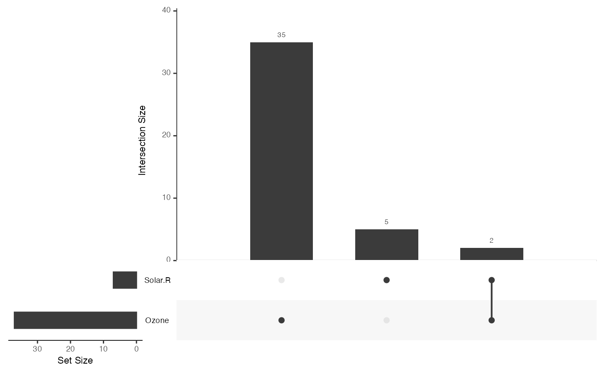

wrapper around UpSetR::upset for vizualization of NA values
Visualization of set intersections using novel UpSet matrix design.
upset_NA(...)
| ... | all arguments accepted by UpSetR::upset where the first one is expected to be a data. |
|---|
Visualization of set data in the layout described by Lex and Gehlenborg in https://www.nature.com/articles/nmeth.3033. UpSet also allows for visualization of queries on intersections and elements, along with custom queries queries implemented using Hadley Wickham's apply function. To further analyze the data contained in the intersections, the user may select additional attribute plots to be displayed alongside the UpSet plot. The user also has the the ability to pass their own plots into the function to further analyze data belonging to queries of interest. Most aspects of the UpSet plot are customizable, allowing the user to select the plot that best suits their style. Depending on how the features are selected, UpSet can display between 25-65 sets and between 40-100 intersections.
Data set must be formatted as described on the original UpSet github page: https://github.com/VCG/upset/wiki.
Lex et al. (2014). UpSet: Visualization of Intersecting Sets IEEE Transactions on Visualization and Computer Graphics (Proceedings of InfoVis 2014), vol 20, pp. 1983-1992, (2014).
Lex and Gehlenborg (2014). Points of view: Sets and intersections. Nature Methods 11, 779 (2014). https://www.nature.com/articles/nmeth.3033
upset_NA(airquality)upset_NA(air_miss, 6)